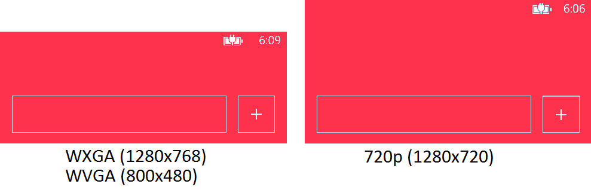

If you create a Windows Phone app and you want it to be able to run on both Windows Phone 7 and Windows Phone 8, you target Windows Phone 7 and the app runs on Windows Phone 8 automatically. But is it really enough to create a Windows Phone 7 buíld? Not if you want to create a really well designed app.
The problem with Windows Phone 8 from a designers point of view is that it introduces two new display resolutions. Windows Phone 7 supports just one resolution, WVGA of 800x480px. Windows Phone 8 adds WXGA (1280×768) and 720p (1280×720). If you run your Windows Phone 7 app on a WXGA device, the app is proportionally scaled by a factor of 1.6 to fill out the whole screen. As long as you provide all your images scaled by the same factor, the app looks ok.
The problem is 720p, because it is a different aspect ratio (16:9 vs 15:9). Your Windows Phone 7 app running on a 720p app is first scaled by a factor of 1.5 to 1200×720 and the rest of the display (80px) is padded on top or bottom, depending on the VerticalAlignment. By default, the padding is added to the top of your app making your header 80px higher:
This makes all the Windows Phone 7 apps look bad on a 720p devices like the HTC 8X I currently use. If you create a Windows Phone 8 project with exactly the same XAML, the app will look ok on a 720p device, no padding added to top or bottom. Another advantage of a special Windows Phone 8 build is that the app will start much faster.
To sum it up, if you want your app to look great on all devices, always create a separate Windows Phone 8 build. It is usually as simple as creating a new Windows Phone 8 project and adding all the existing files as links. You can find more info about this technique on Nokia Dev Wiki.